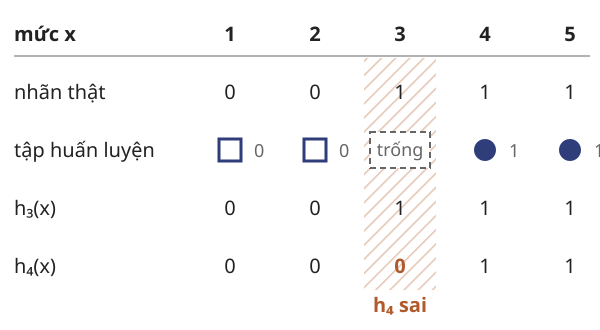
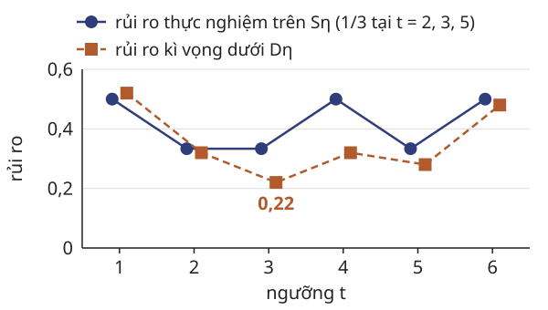
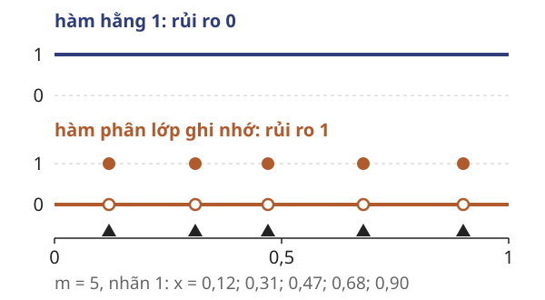
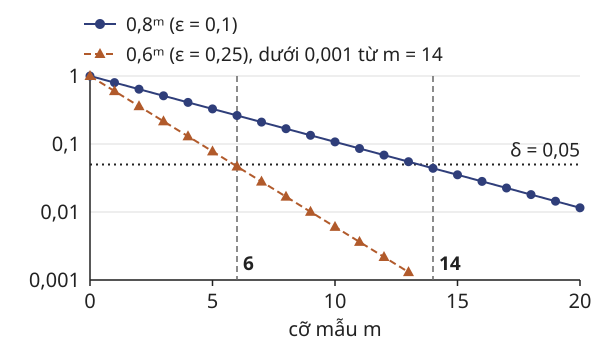
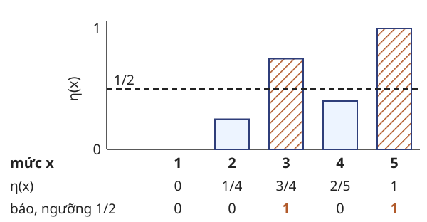
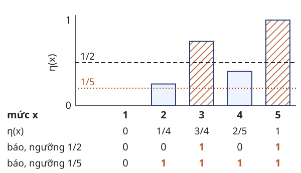
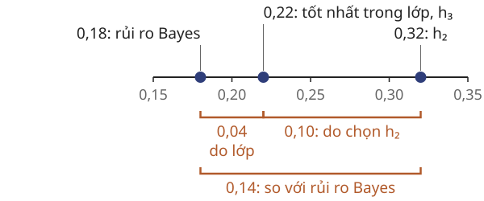
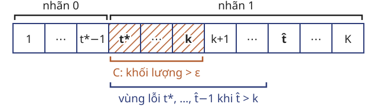
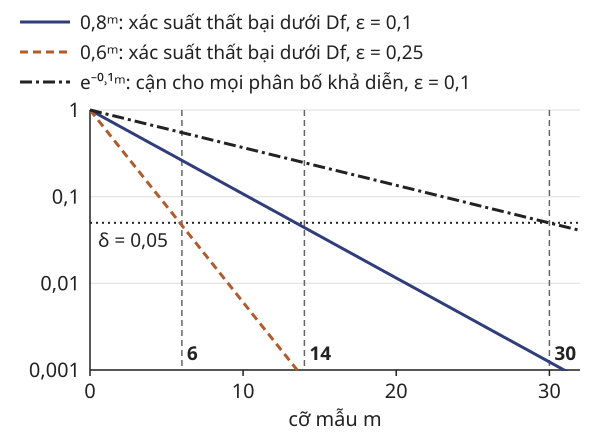

Mô hình học: rủi ro, tối thiểu hóa rủi ro thực nghiệm và học PAC
Bài 01
Học là chọn từ tập huấn luyện một hàm dự đoán có rủi ro kì vọng gần mức tốt nhất trong lớp giả thuyết, với xác suất cao, khi cỡ mẫu vượt một ngưỡng không phụ thuộc phân bố.
Lý thuyết học thống kê · Năm học 2026–2027, học kỳ 1
Khoa Công nghệ thông tin, Trường Đại học Công nghệ, ĐHQGHN
Luận điểm có ba thành phần: một ngưỡng độ chính xác $\epsilon$ cho khoảng cách giữa rủi ro kì vọng của hàm học được và mức tốt nhất trong lớp, một xác suất thất bại $\delta$ lấy theo tập huấn luyện, và một cỡ mẫu đủ chỉ phụ thuộc $(\epsilon,\delta)$. Rủi ro thực nghiệm, tức tỉ lệ lỗi trên chính tập huấn luyện, không có mặt trong yêu cầu này: một nghiệm ERM có tỉ lệ lỗi trên tập huấn luyện bằng $0$ và rủi ro kì vọng bằng $1$ (Mệnh đề 01.15).
Nguồn: ghi chú Bài 01, đoạn mở đầu, §7 (đoạn cuối).
Tiên quyết và quy ước
Nhắc lại: $\mathbb E\big[\sum_iU_i\big]=\sum_i\mathbb E\,U_i$; $\mathbb E[\mathbb E[U\mid X]]=\mathbb E[U]$; cận dưới đúng (infimum) $\inf$; phân bố đều $U[0,1]$; $1-x\le e^{-x}$.
Kí hiệu: $\mathcal X$ tập đầu vào, $\mathcal Y$ tập nhãn, $D$ phân bố dữ liệu trên $\mathcal Z=\mathcal X\times\mathcal Y$; $D_{\mathcal X}$ phân bố biên (marginal distribution); $\eta(x)=\Pr(Y=1\mid X=x)$; hàm chỉ báo (indicator function) $\mathbb 1[\cdot]$.
(T1) $Z_1,\ldots,Z_m$ độc lập cùng phân bố (independent and identically distributed, i.i.d.) theo $D$.
(T2) $\ell(h,z)\ge0$ đo được theo $z$; khi $\ell$ không bị chặn, rủi ro kì vọng phải hữu hạn.
Dòng đầu là tính tuyến tính của kì vọng (với $U_i$ khả tích) và tính chất kì vọng lặp. Ba câu ôn nhanh dùng lại trong bài: dưới $U[0,1]$, $\Pr\big(X\in\{0{,}1;\ 0{,}5;\ 0{,}9\}\big)=0$ vì hợp ba điểm có xác suất không vượt tổng ba xác suất bằng $0$; với $Z_2=Z_1$ và $\mathbb EZ_1=\mu$, $\mathbb E[(Z_1+Z_2)/2]=\mu$ dù hai biến phụ thuộc hoàn toàn; rút $m$ lần độc lập đều trên $\{1,\ldots,5\}$, xác suất không lần nào ra số 3 là $0{,}8^m$. Một khẳng định đúng hầu chắc chắn nếu nó đúng ngoài một biến cố có xác suất $0$. Một số kết quả chỉ cần dạng yếu của (T1): mỗi $Z_i$ có phân bố $D$, không cần độc lập. Ở (T2), $h$ chạy trên lớp giả thuyết $\mathcal H$, và điều kiện hữu hạn là $L_D(h)=\mathbb E_{Z\sim D}\,\ell(h,Z)<\infty$. Định nghĩa thuật toán học còn đòi ánh xạ $(s,z)\mapsto\ell(A(s),z)$ đo được, để rủi ro của hàm học được là một biến ngẫu nhiên.
Nguồn: ghi chú Bài 01, Kiến thức tiên quyết, §2, Định nghĩa 01.4.
Mục tiêu
Phát biểu bài toán học thống kê; tách đại lượng cố định, đại lượng ngẫu nhiên.
Tính rủi ro kì vọng, thực nghiệm, Bayes, vượt mức và tập nghiệm ERM.
Chứng minh tính không chệch của rủi ro thực nghiệm với giả thuyết cố định.
Định nghĩa học PAC khả diễn, bất khả diễn; độ phức tạp mẫu của thuật toán, của lớp.
Dựng phản ví dụ hàm phân lớp ghi nhớ; giải thích vai trò thiên kiến quy nạp.
Mục tiêu 2 gồm cả việc tìm ngưỡng tối ưu khi hai loại lỗi có chi phí khác nhau. Mục tiêu 4 đòi phân biệt độ phức tạp mẫu của một thuật toán với độ phức tạp mẫu của một lớp. Mục tiêu 5 gồm chứng minh hàm phân lớp chỉ ghi nhớ có rủi ro thực nghiệm bằng $0$ và rủi ro kì vọng bằng $1$. Tệp bài tập ghi mục tiêu mà mỗi bài kiểm tra.
Nguồn: ghi chú Bài 01, Mục tiêu học tập, §10.
Vấn đề trung tâm
Câu hỏi: học có nghĩa là gì?
Cụ thể: khi nào một hàm dự đoán chọn từ tập huấn luyện được xem là đã học được, trước cả khi dùng nó để dự đoán?
Bài toán học thống kê: mục tiêu là hiệu $L_D(A(S))-\inf_{h\in\mathcal H}L_D(h)$ nhỏ khi không biết phân bố $D$.
Rủi ro thực nghiệm: $L_S(h)$ là ước lượng không chệch của $L_D(h)$ khi $h$ không phụ thuộc $S$; với $h=A(S)$ thì nói chung không.
Thuật toán ghi nhớ: một nghiệm ERM có thể có $L_S=0$ và $L_D=1$.
Học PAC: học là bảo đảm $L_D(A(S))\le\inf_hL_D(h)+\epsilon$ với xác suất ít nhất $1-\delta$ khi $m\ge M(\epsilon,\delta)$, với $M$ không phụ thuộc $D$.
Rủi ro thực nghiệm nhỏ không đủ; trên lớp hàm ngưỡng, với mọi phân bố khả diễn, $A_{\max}$ đạt bảo đảm học PAC khi $m\ge\lceil\ln(1/\delta)/\epsilon\rceil$.
Nguồn: ghi chú Bài 01, đoạn mở đầu, §7, §8, §9.
Ví dụ: hai hàm phân lớp cùng khớp tập huấn luyện
Mỗi mức $x\in\{1,\ldots,5\}$ chiếm $20\%$ dân số; có bệnh ($y=1$) khi và chỉ khi $x\ge3$.
Tập huấn luyện (training sample) $S_f$: $(1,0)$, $(2,0)$, $(4,1)$, $(5,1)$.
Hàm phân lớp (classifier) $h_3(x)=\mathbb 1[x\ge3]$ và $h_4(x)=\mathbb 1[x\ge4]$.
Câu hỏi: hiệu quả của hai hàm phân lớp này như thế nào?
Cả hai khớp mọi quan sát của $S_f$; trên toàn dân số, $h_4$ sai ở mức 3, tức với xác suất $0{,}2$.

Hàm chỉ báo $\mathbb 1[p]$ bằng $1$ khi mệnh đề $p$ đúng, bằng $0$ khi $p$ sai. Chỉ số dưới của $h$ là ngưỡng báo dương tính. Hai hàm chỉ khác nhau tại $x=3$, và $S_f$ không có người nào ở mức 3, nên nếu chỉ nhìn vào tập huấn luyện thì không biết nên chọn hàm nào. Trên hình, cột mức 3 gạch chéo là cột duy nhất mà hai hàng $h_3$, $h_4$ khác nhau, và hàng tập huấn luyện trống đúng ở cột đó. Mỗi tập huấn luyện cỡ $m$ lấy từ dân số này bỏ sót mức 3 với xác suất $0{,}8^m$.
Nguồn: ghi chú Bài 01, Câu hỏi mở đầu.
2. Bài toán học thống kêChất lượng của một hàm dự đoán là mức sai trung bình của nó trên dữ liệu mới.
tám thành phần · rủi ro kì vọng · hàm lỗi có trọng số · mục tiêu so với lớp giả thuyết
Hai hàm $h_3$, $h_4$ cùng khớp $S_f$ nhưng sai khác nhau trên dân số. Để so chúng, bài toán được viết thành tám thành phần và chất lượng được đo bằng rủi ro kì vọng. Mục tiêu thu được là hiệu $L_D(A(S))-\inf_{h\in\mathcal H}L_D(h)$; hiệu này không tính được vì $D$ chưa biết.
Nguồn: ghi chú Bài 01, §1, §3, §4.
Thành phần của một bài toán học
Quan sát (example) $z=(x,y)\in\mathcal Z$ theo phân bố liên hợp (joint distribution) $D$ chưa biết.
Tập huấn luyện $S=(z_1,\ldots,z_m)\sim D^m$, cỡ mẫu (sample size) $m$.
Lớp giả thuyết (hypothesis class) $\mathcal H$, hàm lỗi (loss function) $\ell(h,z)\ge0$, chọn trước khi lấy mẫu.
Thuật toán học (learning algorithm) $A$ chỉ dùng $S$, trả về hàm dự đoán (predictor) $A(S)\in\mathcal H$.
Lưu ý: $D$, $\mathcal H$, $\ell$, $A$ cố định; $S$, $A(S)$ và rủi ro của $A(S)$ ngẫu nhiên.
Mục tiêu là $A(S)$ sai ít trên quan sát mới. Tám thành phần của bài toán: tập đầu vào (input space) $\mathcal X$ và tập nhãn (label set) $\mathcal Y$, phân bố dữ liệu $D$, tập huấn luyện, lớp giả thuyết, hàm lỗi, thuật toán học, mục tiêu, và tài nguyên là cỡ mẫu $m$. Vì $D$ là phân bố liên hợp, cùng một $x$ có thể có hai nhãn; hàm gán nhãn $f$ là trường hợp riêng $D(Y=f(x)\mid X=x)=1$. Thuật toán học không được phép biết $D$ mà chỉ được sử dụng $S$; một quy tắc cần biết $D$ để chạy không phải là thuật toán học. Rủi ro của $A(S)$, kí hiệu $L_D(A(S))$ ở trang sau, là biến ngẫu nhiên theo $S\sim D^m$, dù $D$ cố định. Khi thuật toán sinh thêm đại lượng ngẫu nhiên $\xi$, như khi lấy mẫu lô nhỏ (mini-batch), đầu ra $A(S;\xi)$ ngẫu nhiên theo cả $S$ và $\xi$.
Nguồn: ghi chú Bài 01, §1 (danh sách thành phần và bảng nguồn ngẫu nhiên), Định nghĩa 01.4.
Ví dụ: sàng lọc theo ngưỡng trên năm mức đo
$\mathcal X=\{1,\ldots,5\}$, $D_{\mathcal X}(x)=0{,}2$; $\mathcal Y=\{0,1\}$, $y=1$ là có bệnh.
Lớp hàm ngưỡng $\mathcal H=\{h_t=\mathbb 1[x\ge t]:\ t=1,\ldots,6\}$, với $h_1\equiv1$ và $h_6\equiv0$; hàm lỗi 0–1 (0–1 loss) $\ell_{0\text{-}1}(h,(x,y))=\mathbb 1[h(x)\ne y]$.
$x$ $1$ $2$ $3$ $4$ $5$
$\eta(x)$ $0$ $\tfrac14$ $\tfrac34$ $\tfrac25$ $1$ $f(x)$ $0$ $0$ $1$ $1$ $1$
$D_\eta$: nhãn $1$ với xác suất $\eta(x)$; $S_\eta$: $(1,0)$, $(2,0)$, $(2,1)$, $(3,1)$, $(4,0)$, $(5,1)$.
$D_f$: $y=f(x)$ với hàm gán nhãn (labeling function, target function) $f=h_3$; $S_f$: $(1,0)$, $(2,0)$, $(4,1)$, $(5,1)$.
Phân bố liên hợp viết $D(x,y)=D_{\mathcal X}(x)D(y\mid x)$, với $D_{\mathcal X}$ đều trong cả hai phiên bản. Bản có nhiễu dùng $D_\eta(y\mid x)=\eta(x)^y(1-\eta(x))^{1-y}$. Bản tất định đặt toàn bộ xác suất vào $y=f(x)$. Tại $x=2$, $S_\eta$ có cả nhãn $0$ và nhãn $1$, nên không hàm nào khớp mọi quan sát của $S_\eta$. $S_f$ là tập huấn luyện của ví dụ hai hàm phân lớp vừa xét.
Nguồn: ghi chú Bài 01, §1 (mục 2), §3, Ví dụ 01.1.
Rủi ro kì vọng và hai loại lỗi
Trực quan. Đo chất lượng $h$ trên quan sát mới $Z\sim D$, độc lập với $S$.
Rủi ro kì vọng (population risk, expected risk) $L_D(h)=\mathbb E_{Z\sim D}\,\ell(h,Z)$.
Chi phí âm tính giả (false negative, FN) $c_{FN}=4$, dương tính giả (false positive, FP) $c_{FP}=1$.
Hàm lỗi có trọng số (cost-weighted loss) $\ell_c$, rủi ro $L_D^c(h)=\mathbb E_{Z\sim D}\,\ell_c(h,Z)$:
$$\ell_c\big(h,(x,y)\big)=c_{FN}\,\mathbb 1[y=1,\ h(x)=0]+c_{FP}\,\mathbb 1[y=0,\ h(x)=1].$$
Câu hỏi: tại sao không nên đo chất lượng của hàm dự đoán trên tập huấn luyện?
Với $h$ cho trước, $L_D(h)$ là một số, không phải biến ngẫu nhiên, nhưng chưa biết vì chưa biết $D$. Với hàm lỗi 0–1, $L_D(h)=\Pr(h(X)\ne Y)$ là xác suất lỗi của $h$. Âm tính giả là báo âm tính cho người bệnh, dương tính giả là báo dương tính cho người khỏe; với $(c_{FP},c_{FN})=(1,4)$, bỏ sót một người bệnh đắt gấp bốn lần đưa một người khỏe đi xét nghiệm thêm. Khi $c_{FP}=c_{FN}=1$, $\ell_c$ là hàm lỗi 0–1. Với hàm lỗi không bị chặn, như hàm lỗi bình phương, (T2) đòi thêm $L_D(h)<\infty$ với mọi $h\in\mathcal H$ (Định nghĩa 01.3). Câu hỏi thực hành của ví dụ sàng lọc: nên đặt ngưỡng báo dương tính ở đâu khi hai loại lỗi có chi phí khác nhau.
Nguồn: ghi chú Bài 01, §3 (ứng dụng sàng lọc), §4, Định nghĩa 01.1, 01.3.
Ví dụ: rủi ro kì vọng của các hàm ngưỡng
$h_t$ sai tại mức $x<t$ khi $Y=1$ và tại mức $x\ge t$ khi $Y=0$, nên
$$L^c_{D_\eta}(h_t)=0{,}2\Big[c_{FN}\sum_{x<t}\eta(x)+c_{FP}\sum_{x\ge t}\big(1-\eta(x)\big)\Big].$$
Tại $t=3$: $L_{D_\eta}(h_3)=0{,}2\,(0{,}25+0{,}85)=0{,}22$; $L^c_{D_\eta}(h_3)=0{,}37$.
Câu hỏi: tính $L^c_{D_\eta}(h_2)$. Lời giải: $0{,}2\,(4\cdot0+1{,}6)=0{,}32$.
Diễn giải: dưới $\ell_{0\text{-}1}$ hàm tốt nhất trong lớp là $h_3$, dưới $\ell_c$ là $h_2$.
$t$ $1$ $2$ $3$ $4$ $5$ $6$
$L_{D_\eta}(h_t)$ $0{,}52$ $0{,}32$ $\mathbf{0{,}22}$ $0{,}32$ $0{,}28$ $0{,}48$ $L^c_{D_\eta}(h_t)$ $0{,}52$ $\mathbf{0{,}32}$ $0{,}37$ $0{,}92$ $1{,}12$ $1{,}92$
Tổng thứ nhất là khối lượng nhãn 1 bị bỏ sót, tổng thứ hai là khối lượng nhãn 0 bị báo nhầm; $L_{D_\eta}$ là trường hợp $c_{FN}=c_{FP}=1$. Tại $t=3$, tổng bỏ sót là $0+\tfrac14=0{,}25$ và tổng báo nhầm là $\tfrac14+\tfrac35+0=0{,}85$. Tại $t=2$, tổng bỏ sót bằng $0$ và tổng báo nhầm bằng $\tfrac34+\tfrac14+\tfrac35+0=1{,}6$. Khi bỏ sót đắt gấp bốn, báo dương tính thêm cho mức 2, nơi $\eta(2)=\tfrac14$, làm chi phí giảm từ $0{,}37$ xuống $0{,}32$. Hàm tốt nhất trong lớp đổi theo hàm lỗi, nên hàm lỗi là một thành phần của bài toán.
Nguồn: ghi chú Bài 01, Ví dụ 01.2, Phụ lục C.1.
Mục tiêu của bài toán học thống kê
Thuật toán $A$ được chọn trước khi lấy mẫu, không phụ thuộc $D$; mục tiêu là hiệu sau nhỏ:
$$L_D\big(A(S)\big)-\inf_{h\in\mathcal H}L_D(h).$$
Ví dụ. Dưới $D_\eta$, $m=6$: chọn $\hat t=\hat t(S)$ để $L_{D_\eta}(h_{\hat t})-0{,}22$ nhỏ.
Dưới $D_f$, trên $S_f$: $h_3$ và $h_4$ cùng khớp, với $L_{D_f}(h_3)=0$, $L_{D_f}(h_4)=0{,}2$.
Câu hỏi: hiệu trên nhỏ đến đâu, với xác suất nào theo $S$, và trên họ phân bố $D$ nào?
Đây là bài toán học thống kê (statistical learning problem) của Định nghĩa 01.5. Hiệu không âm vì $A(S)\in\mathcal H$. Vì $S$ ngẫu nhiên, $A(S)$ và hiệu cũng ngẫu nhiên: một tập $S$ khác lấy mẫu từ $D_\eta^6$ có thể cho ngưỡng khác. Ba câu hỏi này là câu hỏi chính của Học thống kê. Hiệu không tính được vì $L_D(h)$ là kì vọng theo $D$ chưa biết, kể cả khi $h$ cho trước.
Nguồn: ghi chú Bài 01, Định nghĩa 01.5, Ví dụ 01.4.
3. Rủi ro thực nghiệm và tối thiểu hóa rủi ro thực nghiệmTỉ lệ lỗi trên tập huấn luyện có trung bình bằng mức sai trên dữ liệu mới khi hàm được chọn trước.
rủi ro thực nghiệm · ước lượng không chệch · khoảng cách tổng quát hóa · quy tắc chọn khi bằng nhau
Mục tiêu $L_D(A(S))-\inf_hL_D(h)$ không tính được vì $D$ chưa biết. Rủi ro thực nghiệm, trung bình hàm lỗi trên $S$, thay cho $L_D$; phép thay đúng theo kì vọng khi giả thuyết không phụ thuộc $S$, và tối thiểu hóa rủi ro thực nghiệm chọn giả thuyết theo đại lượng này. Khi có nhiều nghiệm ERM, quy tắc chọn khi bằng nhau quyết định rủi ro kì vọng của hàm trả về.
Nguồn: ghi chú Bài 01, §5.
Ví dụ: rủi ro thực nghiệm trên $S_\eta$
$S_\eta$: $(1,0)$, $(2,0)$, $(2,1)$, $(3,1)$, $(4,0)$, $(5,1)$; $h_3$ sai trên $(2,1)$ và $(4,0)$.
Rủi ro thực nghiệm (empirical risk) $L_S(h)=\frac1m\sum_{i=1}^m\ell(h,z_i)$, nên $L_{S_\eta}(h_3)=\tfrac26=\tfrac13$.
$L_D(h)$ không tính được vì $D$ chưa biết; $L_S(h)$ tính được từ $S$.
Diễn giải: $h_2$, $h_3$, $h_5$ cùng có $L_{S_\eta}=\tfrac13$, còn $L_{D_\eta}$ lần lượt là $0{,}32$, $0{,}22$, $0{,}28$.

$L_S(h)$ là rủi ro kì vọng dưới phân bố thực nghiệm (empirical distribution), phân bố gán xác suất $\tfrac1m$ cho mỗi lần xuất hiện của một quan sát trong $S$; với hàm lỗi 0–1, đó là tỉ lệ lỗi (error rate) trên tập huấn luyện. Số lỗi của $h_1,\ldots,h_6$ trên $S_\eta$ là $3,2,2,3,2,3$. Nếu chỉ dựa vào $L_{S_\eta}$, ta không phân biệt được hàm tốt nhất $h_3$ với $h_2$ và $h_5$. Trên hình, ba chấm tròn tại $t=2,3,5$ nằm cùng độ cao $\tfrac13$, trong khi ba ô vuông bên cạnh nằm ở ba độ cao khác nhau, thấp nhất tại $t=3$.
Nguồn: ghi chú Bài 01, Định nghĩa 01.6, Ví dụ 01.5, đoạn cuối §4.
Tính không chệch với giả thuyết cố định
Trực quan. Với $h$ cố định, mỗi $\ell(h,Z_i)$ có cùng phân bố với lỗi của $h$ trên một quan sát mới $Z\sim D$.
Ví dụ. Dưới $D_f$, $m=1$: $L_S(h_4)=\mathbb 1[X_1=3]$ có kì vọng $0{,}2=L_{D_f}(h_4)$.
Giả thiết: mỗi $Z_i\sim D$, không cần độc lập; $h$ không phụ thuộc $S$; (T2); $L_D(h)<\infty$.
Bảo đảm: (Mệnh đề 01.7) với mọi $m\ge1$, theo kì vọng,
$$\mathbb E_S\big[L_S(h)\big]=L_D(h).$$
Trên một tập cụ thể vẫn lệch: $L_{S_\eta}(h_3)=\tfrac13$, trong khi $\mathbb E_{S\sim D_\eta^6}[L_S(h_3)]=0{,}22$.
$L_S(h)$ là một ước lượng không chệch (unbiased estimator) của $L_D(h)$. Bảo đảm theo kì vọng này so một đại lượng thực nghiệm với một đại lượng tổng thể (population quantity); trên $S_\eta$, độ lệch là $\tfrac13-0{,}22$. Trong ví dụ, $h_4$ và $f=h_3$ chỉ khác nhau tại $x=3$, nên với một quan sát, $L_S(h_4)$ bằng $1$ đúng khi $X_1=3$, một biến cố có xác suất $0{,}2$. Giả thiết quyết định là $h$ không phụ thuộc $S$.
Nguồn: ghi chú Bài 01, Mệnh đề 01.7 và đoạn sau chứng minh.
Ý tưởng chứng minh: tính không chệch
$\ell(h,Z_i)$ chỉ phụ thuộc $Z_i\sim D$ (giả thiết $h$ không phụ thuộc $S$, $L_D(h)<\infty$), nên $\mathbb E\,\ell(h,Z_i)=L_D(h)$.
Tính tuyến tính: $\mathbb E_S[L_S(h)]=\frac1m\sum_{i=1}^m\mathbb E\,\ell(h,Z_i)=L_D(h)$, không dùng độc lập.
Trường hợp cực biên $Z_1=\cdots=Z_m$ dưới $D_f$: $L_S(h_4)\in\{0,1\}$, kì vọng vẫn bằng $0{,}2$.
Bỏ "$h$ không phụ thuộc $S$": bước 1 hỏng, vì $\ell(A(S),Z_i)$ phụ thuộc $Z_i$ qua cả $A(S)$.
Kỹ thuật. Tính tuyến tính của kì vọng: $\mathbb E\big[\sum_iU_i\big]=\sum_i\mathbb E\,U_i$ với $U_i$ khả tích, không cần độc lập.
Lộ trình hai bước: tính kì vọng của từng số hạng, rồi cộng. Bước 1 là nơi duy nhất dùng giả thiết: vì $h$ cố định và $\ell(h,\cdot)$ đo được, $\ell(h,Z_i)$ là biến ngẫu nhiên không âm chỉ phụ thuộc $Z_i$; phân bố của $Z_i$ là $D$ nên kì vọng là tích phân $\int_{\mathcal Z}\ell(h,z)\,dD(z)=L_D(h)$, hữu hạn theo giả thiết. Bước 2 là tính tuyến tính của kì vọng cho tổng hữu hạn, đúng cả khi các $Z_i$ phụ thuộc nhau, nên chỉ cần dạng yếu của (T1). Trường hợp cực biên là Bài tập 01.3(a): mọi quan sát trùng nhau, $L_S(h_4)$ chỉ nhận $0$ hoặc $1$ nhưng vẫn có kì vọng $0{,}2$. Độc lập không làm đổi kì vọng; nó làm $L_S$ tập trung quanh $L_D$ khi $m$ lớn. Ý nghĩa cho học: để ước lượng rủi ro của một hàm dự đoán, tính rủi ro thực nghiệm trên dữ liệu độc lập với dữ liệu dùng để chọn nó.
Nguồn: ghi chú Bài 01, chứng minh Mệnh đề 01.7; tệp bài tập, Bài tập 01.3(a).
Nghiệm ERM và quy tắc chọn khi bằng nhau
Tối thiểu hóa rủi ro thực nghiệm (empirical risk minimization, ERM): chọn $h$ có $L_S(h)$ nhỏ nhất.
Khi tập nghiệm ERM $\arg\min_{h\in\mathcal H}L_S(h)\ne\emptyset$ với mọi $S$, thuật toán ERM trả về một phần tử của nó.
Quy tắc chọn khi bằng nhau (tie-breaking): $A_{\min}$, $A_{\max}$ lấy ngưỡng nhỏ nhất, lớn nhất.
Tập huấn luyện Tập nghiệm ERM $A_{\min}$ $A_{\max}$
$S_\eta$ $\{h_2,h_3,h_5\}$ $h_2$, $L_{D_\eta}=0{,}32$ $h_5$, $L_{D_\eta}=0{,}28$ $S_f$ $\{h_3,h_4\}$ $h_3$, $L_{D_f}=0$ $h_4$, $L_{D_f}=0{,}2$
Diễn giải: hai quy tắc cho $0{,}32$ và $0{,}28$ trên $S_\eta$, $0$ và $0{,}2$ trên $S_f$.
Mỗi phần tử của tập nghiệm là một nghiệm ERM. Trên $S_\eta$, chỉ $h_3$ đạt mức $0{,}22$, nhưng cả hai quy tắc đều không chọn $h_3$; so với $0{,}22$, $A_{\min}$ mất $0{,}10$, $A_{\max}$ mất $0{,}06$. Dưới $D_f$, tập nghiệm là $\{h_t:\max\{x_i:y_i=0\}<t\le\min\{x_i:y_i=1\}\}$, nên $A_{\max}$ chọn $\hat t=\min\{x_i:y_i=1\}$ (hoặc $6$), còn $A_{\min}$ chọn $\hat t=1+\max\{x_i:y_i=0\}$. Với hàm lỗi 0–1, $L_S$ chỉ nhận giá trị trong $\{0,\tfrac1m,\ldots,1\}$, nên tập nghiệm luôn khác rỗng. Với hàm lỗi khác, tập nghiệm có thể rỗng: lớp $\{x\mapsto wx:\ w>0\}$, hàm lỗi bình phương và $S=((1,0))$ cho $L_S(h_w)=w^2$, cận dưới đúng $0$ không đạt (Ví dụ 01.7). Khi đó dùng ERM xấp xỉ (approximate ERM): $L_S(A(S))\le\inf_hL_S(h)+\epsilon_{\mathrm{opt}}$ với sai số tối ưu $\epsilon_{\mathrm{opt}}\ge0$, giả thiết (O2); thuật toán ERM chính xác là giả thiết (O1). Các bài sau dùng lại hai nhãn này.
Nguồn: ghi chú Bài 01, Định nghĩa 01.8, 01.12, Ví dụ 01.6, 01.7, Nhận xét 01.11, §2 (O1), (O2).
Ví dụ: giả thuyết chọn theo tập huấn luyện
Dưới $D_f$, $m=1$, $X_1$ đều trên năm mức; so $h_4$ cố định với $A_{\max}$.
Câu hỏi: với thuật toán ERM $A$, $\mathbb E_S[L_S(A(S))]$ có bằng $\mathbb E_S[L_D(A(S))]$ không?
$X_1$ $1$ $2$ $3$ $4$ $5$ trung bình
$L_S(h_4)=\mathbb 1[X_1=3]$ $0$ $0$ $1$ $0$ $0$ $0{,}2$ $\hat t$ của $A_{\max}$ $6$ $6$ $3$ $4$ $5$ $L_S(A_{\max}(S))$ $0$ $0$ $0$ $0$ $0$ $0$ $L_{D_f}(A_{\max}(S))=0{,}2(\hat t-3)$ $0{,}6$ $0{,}6$ $0$ $0{,}2$ $0{,}4$ $0{,}36$
Diễn giải: với $h_4$, hai kì vọng cùng bằng $0{,}2$; với $A_{\max}$, chúng là $0$ và $0{,}36$.
Bước 1 của chứng minh Mệnh đề 01.7 hỏng: $\ell(A(S),Z_1)$ phụ thuộc $Z_1$ qua $A(S)$.
Với một quan sát, $A_{\max}$ chọn $\hat t=X_1$ khi $Y_1=1$ và $\hat t=6$ khi $Y_1=0$; dưới $D_f$, $Y_1=1$ đúng khi $X_1\ge3$. Năm tập huấn luyện đồng khả năng liệt kê được đủ. $A_{\max}$ khớp mọi tập huấn luyện lấy mẫu từ $D_f$, nên $L_S(A_{\max}(S))=0$ trên mọi tập, còn rủi ro kì vọng dương khi $X_1\ne3$. Với $m$ tổng quát, đặt $N=\hat t-3\in\{0,1,2,3\}$; tính tuyến tính cho $\mathbb EN=\sum_{k=1}^3\Pr(N\ge k)$ với $\Pr(N\ge k)=(1-0{,}2k)^m$, $k=1,2,3$, nên $\mathbb E_S[L_{D_f}(A_{\max}(S))]=0{,}2(0{,}8^m+0{,}6^m+0{,}4^m)\ge0{,}2\cdot0{,}8^m>0$; tại $m=1$ giá trị là $0{,}36$, khớp bảng, và tại $m=10$ xấp xỉ $0{,}0227$. Câu trả lời cho câu hỏi: nói chung không bằng; trên chính tập dùng để chọn hàm, rủi ro thực nghiệm có thể đánh giá thấp rủi ro kì vọng. Bài tập 01.3 có một thuật toán mà độ lệch theo chiều ngược lại.
Nguồn: ghi chú Bài 01, Nhận xét 01.9, Ví dụ 01.6, 01.9, Phụ lục C.2; tệp bài tập, Bài tập 01.3.
Khoảng cách tổng quát hóa và tập dữ liệu độc lập
Khoảng cách tổng quát hóa (generalization gap) của $A$ trên $S$:
$$L_D\big(A(S)\big)-L_S\big(A(S)\big).$$
Ngẫu nhiên theo $S$ và có thể âm: $A_{\max}(S_\eta)=h_5$ cho $0{,}28-\tfrac13=-\tfrac4{75}$.
Kì vọng bằng $0$ với $h$ cố định; với $A_{\max}$ dưới $D_f$, kì vọng ít nhất $0{,}2\cdot0{,}8^m$.
Do đó trên chính tập huấn luyện dùng để chọn hàm, $L_S$ có thể đánh giá thấp $L_D$.
Lưu ý: ước lượng rủi ro của $A(S)$ bằng $L_{S'}(A(S))$ trên $S'\sim D^{m'}$ độc lập với $S$.
Câu hỏi "tại sao không nên đo chất lượng trên tập huấn luyện" có lời đáp: trên tập dùng để chọn hàm, rủi ro thực nghiệm có thể thấp hơn rủi ro kì vọng. Cận $0{,}2\cdot0{,}8^m$ đến từ biến cố $S$ không chứa $x=3$, có xác suất $0{,}8^m$; trên biến cố đó, $A_{\max}$ chọn $\hat t\ge4$ và sai tại $x=3$. Cách sửa dùng lại Mệnh đề 01.7: khi lấy điều kiện theo $S$, hàm $A(S)$ cố định đối với $S'$, nên $\mathbb E[L_{S'}(A(S))\mid S]=L_D(A(S))$. Khoảng cách tổng quát hóa là đại lượng có dấu.
Nguồn: ghi chú Bài 01, Định nghĩa 01.10 và đoạn sau, Nhận xét 01.9, §9.
Bài tập: tập nghiệm ERM và hai quy tắc chọn
$\mathcal X=\{1,\ldots,6\}$, $\mathcal H=\{h_t:\ t=1,\ldots,7\}$, $\ell_{0\text{-}1}$; $S$: $(1,0)$, $(2,0)$, $(3,1)$, $(4,0)$, $(4,1)$, $(5,0)$, $(6,1)$.
Thuật toán 01.13 tính số lỗi $E(t)$ của $h_t$: $c_y(x)=\#\{i:\ x_i=x,\ y_i=y\}$, $E(1)=\sum_xc_0(x)$, $E(t+1)=E(t)-c_0(t)+c_1(t)$.
Câu hỏi: tính $L_S(h_t)$ với $t=1,\ldots,7$, tập nghiệm ERM, $A_{\min}(S)$ và $A_{\max}(S)$.
Lời giải: $c_0=(1,1,0,1,1,0)$, $c_1=(0,0,1,1,0,1)$; $E=(4,3,2,3,3,2,3)$ và $L_S(h_t)=E(t)/7$.
Tập nghiệm ERM là $\{h_3,h_6\}$, nên $A_{\min}(S)=h_3$ và $A_{\max}(S)=h_6$.
Khi ngưỡng tăng từ $t$ lên $t+1$, chỉ dự đoán tại $x=t$ đổi từ $1$ sang $0$: quan sát nhãn 0 tại $t$ hết sai, quan sát nhãn 1 tại $t$ trở thành sai. Chi phí là $O(m)$ cho các số đếm và $O(K)$ cho các cập nhật, với $K=\lvert\mathcal X\rvert=6$. Kiểm tra: $E(1)$ bằng số nhãn 0 ($4$), $E(7)$ bằng số nhãn 1 ($3$); trên $S_\eta$, cùng thuật toán cho $E=(3,2,2,3,2,3)$, khớp bảng số lỗi. Với phân bố $D$ cho trong đề Bài tập 01.2(b), $L_D(h_3)=0{,}29$, $L_D(h_6)=0{,}45$ và $\min_tL_D(h_t)=L_D(h_4)=0{,}25$: hai nghiệm ERM trên cùng tập huấn luyện có rủi ro chênh nhau $0{,}16$. Các phần (b)–(d) của bài tập làm ở nhà.
Nguồn: tệp bài tập, Bài tập 01.2(a)(b); ghi chú Bài 01, Thuật toán 01.13.
4. Thuật toán ghi nhớ và thiên kiến quy nạpMột hàm khớp mọi quan sát huấn luyện vẫn có thể sai với xác suất 1 trên quan sát mới.
thuật toán ghi nhớ · nguyên tử · bất đẳng thức hợp · quá khớp · thiên kiến quy nạp
Trên lớp hàm ngưỡng, quy tắc chọn khi bằng nhau làm rủi ro kì vọng dưới $D_\eta$ thay đổi từ $0{,}22$ đến $0{,}32$ trên $S_\eta$. Trên lớp chứa mọi hàm phân lớp đo được, một nghiệm ERM có rủi ro kì vọng bằng $1$. Vì vậy một bảo đảm học phải nói trực tiếp về $L_D(A(S))$ và phải cho phép thất bại.
Nguồn: ghi chú Bài 01, §5 (từ Định nghĩa 01.14).
Ví dụ: thuật toán ghi nhớ trên đoạn $[0,1]$
$\mathcal X=[0,1]$ với σ-đại số (σ-algebra) Borel, $X\sim U[0,1]$, $Y=1$; hàm lỗi $\ell_{0\text{-}1}$.
Lớp $\mathcal M_{\mathcal X}$: mọi hàm phân lớp đo được $\mathcal X\to\{0,1\}$.
Thuật toán ghi nhớ (memorizing algorithm) $A_{\mathrm{gn}}$: tại mỗi điểm đã thấy, trả nhãn đa số (bằng phiếu thì $1$).
Ở mọi điểm khác, $A_{\mathrm{gn}}(S)$ trả $0$.
Trên mỗi $S$, $A_{\mathrm{gn}}(S)=\mathbb 1_F$ với $F=\{X_1,\ldots,X_m\}$; $h_{\equiv1}$ cũng khớp mọi quan sát.

$A_{\mathrm{gn}}(S)$ là hàm phân lớp ghi nhớ (memorizing classifier). Hàm này không dùng cấu trúc nào của $\mathcal X$: trên $\{1,\ldots,5\}$, $A_{\mathrm{gn}}(S_f)=\mathbb 1[x\in\{4,5\}]=h_4$. Lớp $\mathcal M_{\mathcal X}$ chứa cả hàm hằng $h_{\equiv1}$, có rủi ro $0$, và hàm chỉ báo $\mathbb 1_F$ của mọi tập hữu hạn $F\subset[0,1]$. Hình vẽ một tập huấn luyện cỡ $m=5$: hàng trên là hàm hằng 1, hàng dưới là hàm phân lớp ghi nhớ; hàng dưới chỉ chạm mức 1 tại năm chấm, nên mọi điểm khác của đoạn đều là điểm sai.
Nguồn: ghi chú Bài 01, Định nghĩa 01.14, Ví dụ 01.8.
Hàm phân lớp ghi nhớ có rủi ro kì vọng bằng 1
Trực quan. Tập hữu hạn có xác suất $0$ dưới $U[0,1]$, nên quan sát mới hầu chắc chắn (almost surely) rơi ngoài $F$.
Giả thiết: $\mathcal X=[0,1]$ (Borel); $D_{\mathcal X}=U[0,1]$ không có nguyên tử (atomless): $\Pr(X=x)=0\ \forall x$; $Y=1$; $\mathcal H=\mathcal M_{\mathcal X}$; $\ell_{0\text{-}1}$; $A_{\mathrm{gn}}$.
Bảo đảm: (Mệnh đề 01.15) tất định, với mọi $m\ge1$ và mọi $S$:
(a) $A_{\mathrm{gn}}$ là thuật toán ERM, $L_S(A_{\mathrm{gn}}(S))=0$ và (b) $L_D(A_{\mathrm{gn}}(S))=1$;
(c) $h_{\equiv1}$ cũng là nghiệm ERM, $L_D(h_{\equiv1})=0=\inf_{h\in\mathcal H}L_D(h)$.
Ý nghĩa: $A_{\mathrm{gn}}$ quá khớp (overfitting) ở mức cực đoan.
Hầu chắc chắn nghĩa là đúng ngoài một biến cố có xác suất $0$; một điểm $x$ với $\Pr(X=x)>0$ là một nguyên tử (atom). Ngoài $F$, $A_{\mathrm{gn}}(S)$ báo $0$ trong khi nhãn luôn là $1$. Theo (a) và (b), khoảng cách tổng quát hóa bằng $1$ với mọi $m$, nên thêm dữ liệu không giúp $A_{\mathrm{gn}}$. Hàm hằng $h_{\equiv1}$ là nghiệm ERM có rủi ro $0$ dưới cùng phân bố: trên cùng một tập huấn luyện, hai nghiệm ERM có rủi ro $0$ và $1$, nên quy tắc chọn khi bằng nhau quyết định toàn bộ rủi ro kì vọng. Quá khớp là khớp tập huấn luyện tốt mà sai trên dữ liệu mới; ở đây rủi ro thực nghiệm $0$ đi cùng rủi ro kì vọng $1$.
Nguồn: ghi chú Bài 01, Mệnh đề 01.15 và câu sau chứng minh, Ví dụ 01.8.
Ý tưởng chứng minh: hàm phân lớp ghi nhớ
Với $s$ cố định, $A_{\mathrm{gn}}(s)=1$ trên tập hữu hạn: thuộc $\mathcal M_{\mathcal X}$ (giả thiết $\mathcal H=\mathcal M_{\mathcal X}$).
Nhãn đa số tại mỗi điểm cho số lỗi nhỏ nhất, nên $A_{\mathrm{gn}}(s)$ là nghiệm ERM.
$A_{\mathrm{gn}}(S)$ sai đúng khi $X\notin F$; theo bất đẳng thức hợp và không có nguyên tử,
$$\Pr(X\in F)\le\sum_{i=1}^m\Pr(X=x_i)=0.$$
$L_S(h_{\equiv1})=L_D(h_{\equiv1})=0$, vì $h_{\equiv1}$ đúng trên mọi $(X,1)$.
Bỏ "không có nguyên tử": bước 3 hỏng, $\Pr(X\in F)$ có thể dương.
Lộ trình: thuộc lớp, là nghiệm ERM, rủi ro kì vọng, rồi một nghiệm ERM tốt. Ở bước 1 và 2, $s=((x_i,y_i))_{i\le m}$ là một tập huấn luyện cố định; ở bước 3, $F=\{X_1,\ldots,X_m\}$ cố định khi lấy xác suất theo quan sát mới $X$. Tính chất then chốt là một tập hữu hạn có xác suất $0$ dưới $U[0,1]$. Rủi ro thực nghiệm của một hàm chỉ phụ thuộc giá trị của nó trên $F$, nên bước 2 không dùng giả thiết nào về $D$; dưới $D$, mọi nhãn bằng $1$, nên $A_{\mathrm{gn}}(S)=\mathbb 1_F$ và $L_S=0$. Bỏ từng giả thiết thì hỏng ở đâu: nếu lớp chỉ gồm hàm ngưỡng, bước 1 hỏng vì $\mathbb 1_F$ nói chung không là hàm ngưỡng; nếu $D_{\mathcal X}$ có nguyên tử, bước 3 hỏng, và trên năm điểm đồng khả năng, kì vọng theo $S$ của rủi ro kì vọng của hàm phân lớp ghi nhớ là $\mathbb E_S[L_{D_1}(A_{\mathrm{gn}}(S))]=0{,}8^m$ (Ví dụ 01.11). Tính đo được đồng thời của $A_{\mathrm{gn}}$ theo tập huấn luyện và theo điểm, cần để $L_D(A_{\mathrm{gn}}(S))$ là biến ngẫu nhiên, nằm ở Phụ lục A(iii) của ghi chú.
Nguồn: ghi chú Bài 01, chứng minh Mệnh đề 01.15, Ví dụ 01.11, Phụ lục A(iii).
Bất đẳng thức hợp
Kỹ thuật. Bất đẳng thức hợp (union bound): với mọi biến cố $B_1,\ldots,B_m$, không cần độc lập,
$$\Pr\Big(\bigcup_{i=1}^mB_i\Big)\le\sum_{i=1}^m\Pr(B_i).$$
Ở đây $B_i=\{X=x_i\}$ và $\Pr(B_i)=0$, nên hợp có xác suất $0$.
Dùng khi chặn xác suất "có ít nhất một $i$ xấu" bằng tổng các xác suất "$i$ xấu".
Chứng minh một dòng: $\mathbb 1\big[\bigcup_iB_i\big]\le\sum_i\mathbb 1[B_i]$, rồi lấy kì vọng hai vế và dùng tính tuyến tính của kì vọng. Bất đẳng thức đúng cho hợp hữu hạn và hợp đếm được; nó không áp dụng cho hợp không đếm được: $[0,1]=\bigcup_{x\in[0,1]}\{x\}$ có xác suất $1$ dù mỗi điểm có xác suất $0$ (Bài tập 01.4(b)). Bài 02 dùng lại kỹ thuật này cùng bất đẳng thức Hoeffding để chuyển một cận cho từng giả thuyết cố định thành cận cho nghiệm ERM chọn từ $\lvert\mathcal H\rvert$ ứng viên.
Nguồn: ghi chú Bài 01, chứng minh Mệnh đề 01.15 (Bước 3), §11; tệp bài tập, lời giải Bài tập 01.4(b).
Bài tập: hàm phân lớp ghi nhớ với nhãn $\mathbb 1[x>0{,}7]$
$X\sim U[0,1]$, $Y=f(X)$ với $f(x)=\mathbb 1[x>0{,}7]$; $\mathcal H=\mathcal M_{\mathcal X}$; $\ell_{0\text{-}1}$; thuật toán $A_{\mathrm{gn}}$.
Câu hỏi: tính $L_S(A_{\mathrm{gn}}(S))$ và $L_D(A_{\mathrm{gn}}(S))$, rồi so với rủi ro của $f$ và của hàm hằng $0$.
Lời giải: tại mỗi điểm của $F$, mọi nhãn bằng $f(x)$, nên $A_{\mathrm{gn}}(S)=f$ trên $F$ và $L_S(A_{\mathrm{gn}}(S))=0$.
Ngoài $F$, $A_{\mathrm{gn}}(S)=0$, sai khi $f(X)=1$; vì $\Pr(X\in F)=0$, $L_D(A_{\mathrm{gn}}(S))=\Pr(X>0{,}7)=0{,}3$.
Diễn giải: rủi ro $0{,}3$ bằng rủi ro của hàm hằng $0$, còn nghiệm ERM $f\in\mathcal H$ có rủi ro $0$.
Lời giải dùng đúng hai công cụ của chứng minh Mệnh đề 01.15: bất đẳng thức hợp cho $\Pr(X\in F)\le\sum_i\Pr(X=x_i)=0$, và giả thiết không có nguyên tử. Dạng tổng quát của bài: với $D_{\mathcal X}$ không có nguyên tử và $Y=f(X)$, $L_D(A_{\mathrm{gn}}(s))=\Pr(f(X)=1)$ với mọi tập huấn luyện $s$ có nhãn $y_i=f(x_i)$. Với $f\equiv1$, công thức cho rủi ro $1$, đúng Mệnh đề 01.15(b); với $f\equiv0$, nó cho $0$, vì nhãn mặc định $0$ đúng ở mọi nơi. Khi tính $L_D(A_{\mathrm{gn}}(s))$, tập $F$ cố định; xác suất lấy theo quan sát mới $X$. Phần (b) và (c) của bài tập làm ở nhà.
Nguồn: tệp bài tập, Bài tập 01.4(a); ghi chú Bài 01, chứng minh Mệnh đề 01.15.
Thiên kiến quy nạp
Ví dụ. $\tilde S_f=\big((1,0),(3,1),(5,1)\big)$ lấy mẫu từ $D_f$:
$A_{\mathrm{gn}}(\tilde S_f)=\mathbb 1[x\in\{3,5\}]\notin\mathcal H$ sai tại $x=4$, rủi ro $0{,}2$;
chỉ $h_2$, $h_3$ của lớp hàm ngưỡng khớp $\tilde S_f$; cả hai đúng tại $x=4$.
Chọn lớp giả thuyết trước khi có tập huấn luyện là một thiên kiến quy nạp (inductive bias).
Lớp hàm ngưỡng cam kết dự đoán không giảm theo $x$.
Trên $S_f$, $A_{\mathrm{gn}}(S_f)=h_4\in\mathcal H$: bảo đảm học phải cho phép thất bại trên những tập như $S_f$.
Lớp $\mathcal M_{\mathcal X}$ không cam kết gì: trên mỗi tập huấn luyện, vô số hàm của lớp khớp mọi quan sát, với rủi ro kì vọng từ $0$ đến $1$. Trong lớp hàm ngưỡng, $h_2$ có rủi ro $0{,}2$ và $h_3$ có rủi ro $0$ dưới $D_f$; mọi hàm ngưỡng dương tính tại $x=3$ cũng dương tính tại $x=4$, nên lớp hàm ngưỡng loại được lỗi của hàm phân lớp ghi nhớ tại $x=4$. Trên $S_f$, hàm phân lớp ghi nhớ trùng $h_4$, nên lớp hàm ngưỡng không loại được nó. Giá của thiên kiến quy nạp là lớp giả thuyết có thể không chứa hàm dự đoán tốt nhất. Vì $h_3$ và $h_4$ cùng có rủi ro thực nghiệm $0$ trên $S_f$, một bảo đảm học phải phát biểu trực tiếp cho $L_D(A(S))$ và phải cho phép thất bại trên những tập huấn luyện như $S_f$.
Nguồn: ghi chú Bài 01, §5 (các đoạn sau chứng minh Mệnh đề 01.15).
5. Học PACHọc được nghĩa là rủi ro gần mức tốt nhất với xác suất cao khi đủ dữ liệu.
xác suất thất bại · thứ tự lượng từ · độ phức tạp mẫu · rủi ro Bayes · rủi ro vượt mức
Hai hàm cùng có rủi ro thực nghiệm $0$ trên $S_f$ nhưng khác rủi ro kì vọng, nên bảo đảm học phải nói trực tiếp về $L_D(A(S))$ và cho phép thất bại. Hai định nghĩa học PAC trả lời ba câu hỏi chính của Học thống kê (hiệu nhỏ đến đâu, với xác suất nào, trên họ phân bố nào): định nghĩa thứ nhất cho cặp khả diễn, định nghĩa thứ hai cho nhãn có nhiễu; độ phức tạp mẫu đo lượng dữ liệu cần.
Nguồn: ghi chú Bài 01, §6, §7.
Xác suất thất bại và độ chính xác
Trực quan. Dưới $D_f$, tập cỡ $m$ bỏ sót mức 3 với xác suất $0{,}8^m>0$, với mọi $m$.
Xác suất thất bại (failure probability) $\delta$: bảo đảm được hỏng với xác suất $\le\delta$ theo $S$.
Tham số độ chính xác (accuracy parameter) $\epsilon$: chỉ đòi $L_D(A(S))-\inf_hL_D(h)\le\epsilon$ trên các tập còn lại.
Mức 3 chiếm $0{,}001$ dân số: $500$ quan sát bỏ sót nó với xác suất $0{,}999^{500}\approx0{,}61$; sai ở đó chỉ tốn $0{,}001$.
Hai tham số trả lời hai câu hỏi: hiệu nhỏ đến đâu ($\epsilon$) và với xác suất nào theo $S$ ($\delta$). Không thể đòi $\delta=0$: với mọi $m$, tập huấn luyện bỏ sót mức 3 với xác suất dương, và trên những tập đó tập huấn luyện không phân biệt $h_3$ với $h_4$. Tham số $\epsilon$ cho phép bỏ qua những vùng có khối lượng xác suất (probability mass) nhỏ: một mức chiếm $0{,}001$ dân số vắng mặt trong $500$ quan sát với xác suất $0{,}999^{500}=e^{500\ln0{,}999}\approx0{,}61$, nhưng một hàm chỉ sai ở mức đó có rủi ro $0{,}001$, không vượt $\epsilon$ khi $\epsilon\ge0{,}001$.
Nguồn: ghi chú Bài 01, §6 (đoạn đầu).
Học PAC trong trường hợp khả diễn
Khả diễn (realizable): có $h^\star\in\mathcal H$ với $L_D(h^\star)=0$ (hàm lỗi 0–1); tính chất của cặp $(D,\mathcal H)$.
Học xấp xỉ với xác suất cao (probably approximately correct, PAC): $A$ là thuật toán học PAC cho $\mathcal H$ nếu có $M:(0,1)^2\to\mathbb N$ với
$$\Pr_{S\sim D^m}\big[L_D(A(S))\le\epsilon\big]\ge1-\delta$$
với mọi $\epsilon,\delta\in(0,1)$, mọi $D$ khả diễn, mọi $m\ge M(\epsilon,\delta)$.
Ví dụ. $(D_f,\mathcal H)$ khả diễn với $h^\star=h_3$; $(D_\eta,\mathcal H)$ thì không.
Lớp $\mathcal H$ học được PAC (PAC learnable) nếu có một thuật toán học PAC cho $\mathcal H$.
Bối cảnh là phân lớp nhị phân, $\mathcal Y=\{0,1\}$, với hàm lỗi 0–1 và $\mathbb N=\{1,2,\ldots\}$. Khi $(D,\mathcal H)$ khả diễn, $Y=h^\star(X)$ hầu chắc chắn, nên với xác suất $1$ mọi nghiệm ERM có rủi ro thực nghiệm $0$, và $\inf_hL_D(h)=0$: bất đẳng thức của định nghĩa chính là mục tiêu của bài toán học với độ chính xác $\epsilon$ và độ tin cậy (confidence) $1-\delta$. Khả diễn thay đổi khi thay một thành phần: $D_f$ với lớp hai hàm hằng $\{h_1,h_6\}$ không khả diễn, vì $L_{D_f}(h_1)=0{,}4$ và $L_{D_f}(h_6)=0{,}6$; $D_\eta$ không khả diễn với lớp nào, vì tại $x=2$ mọi hàm sai với xác suất ít nhất $0{,}05$. Điều kiện $\inf=0$ khác $\min=0$ (Nhận xét 01.17). Với thuật toán sinh thêm đại lượng ngẫu nhiên $\xi$, xác suất lấy theo cả $S$ và $\xi$.
Nguồn: ghi chú Bài 01, Định nghĩa 01.16, 01.18, Nhận xét 01.17.
Thứ tự lượng từ trong định nghĩa học PAC
Câu hỏi: cỡ mẫu đủ có được phép phụ thuộc phân bố $D$ không?
$$\begin{aligned}&\exists A\ \ \exists M\ \ \forall\epsilon,\delta\in(0,1)\ \ \forall D\ \ \forall m\ge M(\epsilon,\delta):\\&\qquad\Pr_{S\sim D^m}\big[L_D(A(S))\le\epsilon\big]\ge1-\delta\end{aligned}$$
$D$ chạy trên các phân bố mà $(D,\mathcal H)$ khả diễn.
$\exists M$ trước $\forall D$: cỡ mẫu đủ chỉ phụ thuộc $(\epsilon,\delta)$, không phụ thuộc phân bố (distribution-free).
$\exists A$ trước $\forall D$ và $\forall\epsilon,\delta$: chọn thuật toán trước khi biết $D$; $A$ không nhận $\epsilon$, $\delta$.
Đổi thành "$\forall D\ \exists m$": cỡ mẫu được phụ thuộc $D$ chưa biết, một khái niệm yếu hơn.
Xác suất lấy theo $S\sim D^m$, với $D$ cố định bên trong dấu $\Pr$. $\epsilon$ là ngưỡng cho rủi ro kì vọng; $1-\delta$ là độ tin cậy. Câu trả lời cho câu hỏi là không: thuật toán không biết $D$, nên một cỡ mẫu phụ thuộc $D$ không dùng được để quyết định cần thu bao nhiêu dữ liệu. Điều kiện "$\exists A$ trước $\forall D$" là yêu cầu $D$ chưa biết của bài toán học thống kê. Bài tập 01.5(a)(b) yêu cầu viết hai định nghĩa học PAC thành dòng lượng từ và phủ định chúng.
Nguồn: ghi chú Bài 01, §6 (đoạn sau Định nghĩa 01.18).
Độ phức tạp mẫu của thuật toán và của lớp
Độ phức tạp mẫu (sample complexity) $m_A(\epsilon,\delta)$ của thuật toán $A$ là số $m_0\in\mathbb N$ nhỏ nhất đủ cho mọi $D$ khả diễn.
Đủ nghĩa là bất đẳng thức học PAC đúng với mọi $m\ge m_0$; không có $m_0$ thì $m_A=\infty$.
Của lớp $\mathcal H$, lấy riêng cho từng cặp $(\epsilon,\delta)$:
$$m_{\mathcal H}(\epsilon,\delta)=\min_Am_A(\epsilon,\delta).$$
Cận trên cho $m_{\mathcal H}$ chỉ cần một thuật toán tốt; cận dưới phải lập luận cho mọi thuật toán.
Lớp học được PAC khi và chỉ khi có một thuật toán $A$ với $m_A(\epsilon,\delta)<\infty$ cho mọi $(\epsilon,\delta)$; khi đó $A$ cùng $M=m_A$ thỏa định nghĩa. Vì $m_{\mathcal H}$ lấy riêng cho từng cặp, thuật toán đạt nó có thể đổi theo cặp, nên từ $m_{\mathcal H}(\epsilon,\delta)<\infty$ với mọi cặp chưa suy ra được một thuật toán dùng cho mọi cặp. Điều kiện "mọi $m\ge m_0$" cần thiết vì thành công ở cỡ $m$ không kéo theo thành công ở cỡ $m+1$: dưới phân bố $D_1$ (năm mức đều, $Y=1$ chắc chắn), thuật toán trả $A_{\max}(S)$ khi $m$ chẵn và $h_6\equiv0$ khi $m$ lẻ có $m_A=\infty$. Bài tập 01.7 chứng minh tính đơn điệu của độ phức tạp mẫu.
Nguồn: ghi chú Bài 01, Định nghĩa 01.20, Nhận xét 01.21.
Ví dụ: xác suất thất bại của $A_{\max}$ dưới $D_f$
$L_{D_f}(A_{\max}(S))=0{,}2(\hat t-3)\in\{0;\ 0{,}2;\ 0{,}4;\ 0{,}6\}$ dương khi và chỉ khi $S$ không có quan sát tại $x=3$, với xác suất $0{,}8^m$.
$\epsilon=0{,}1$, $\delta=0{,}05$: thành công khi và chỉ khi rủi ro bằng $0$; $0{,}8^{13}\approx0{,}0550$, $0{,}8^{14}\approx0{,}0440$, nên $m\ge14$.
$\epsilon=0{,}25$: thất bại khi và chỉ khi vắng cả $x=3$ và $x=4$; $0{,}6^5\approx0{,}0778$, $0{,}6^6\approx0{,}0467$, nên $m\ge6$.
Diễn giải: $14$ và $6$ chỉ đủ cho riêng $D_f.$

Đây là Ví dụ 01.9 của ghi chú. Vì $f=h_3$, $h_{\hat t}$ sai đúng tại các mức $3,\ldots,\hat t-1$, mỗi mức có xác suất $0{,}2$. $\hat t=3$ khi và chỉ khi $S$ có quan sát tại $x=3$; các quan sát độc lập theo (T1), mỗi quan sát khác $3$ với xác suất $0{,}8$. Giá trị dương nhỏ nhất của rủi ro là $0{,}2>0{,}1$, nên với $\epsilon=0{,}1$ thành công trùng với rủi ro bằng $0$. Với $\epsilon=0{,}25$, vì $0{,}2\le0{,}25<0{,}4$, thất bại khi và chỉ khi $\hat t\ge5$; $0{,}6$ là khối lượng của $\{1,2,5\}$. Nới $\epsilon$ từ $0{,}1$ lên $0{,}25$ làm cỡ mẫu cần giảm từ $14$ xuống $6$. Ở $m=14$, khoảng $4{,}4\%$ số tập huấn luyện cho hàm có rủi ro ít nhất $0{,}2$. Hai cỡ mẫu này đủ cho riêng cặp $(A_{\max},D_f)$, tức một khẳng định dạng "$\forall D\ \exists m$", và đổi khi khối lượng của mức 3 đổi. Trên hình, khoảng cách giữa hai đường tăng theo $m$: nới $\epsilon$ đổi tốc độ giảm từ $0{,}8$ sang $0{,}6$ mỗi quan sát.
Nguồn: ghi chú Bài 01, Ví dụ 01.9, Phụ lục C.2.
Bài tập: cách đọc một bảo đảm học PAC
Dưới $D_f$, $\Pr_S[L_{D_f}(A_{\max}(S))\le0{,}1]\ge0{,}95$ khi $m\ge14$; trên $S_f$, $A_{\max}$ trả về $h_4$.
Câu hỏi: câu sau đúng hay sai? "Đã có tập huấn luyện $S_f$; xác suất để $L_{D_f}(A_{\max}(S_f))\le0{,}1$ là $0{,}95$."
Lời giải: sai. Sau khi có $S_f$, $L_{D_f}(h_4)=0{,}2>0{,}1$ đã cố định; không còn xác suất nào để gán.
Ngoài ra $m=4$ chưa đạt ngưỡng $14$.
Trước khi lấy mẫu: trong $100$ lần huấn luyện với tập mới, khoảng $95$ lần rủi ro không quá $0{,}1$.
Xác suất $1-\delta$ được tính trước khi lấy mẫu, theo các lần lấy mẫu giả định lặp lại từ cùng $D$; mỗi lần huấn luyện dùng một tập mới cỡ $m\ge14$. Tại $m=14$, tỉ lệ thành công là $1-0{,}8^{14}\approx0{,}956$, nên $0{,}95$ là cận dưới. Sau khi đã có $S$, $L_D(A(S))$ là một số: hoặc không vượt quá $\epsilon$, hoặc vượt quá. Câu đúng trong các câu của bài tập là: "Với xác suất ít nhất $0{,}95$ theo tập huấn luyện cỡ $m\ge14$, hàm phân lớp học được có xác suất lỗi không quá $0{,}1$." Đó là bất đẳng thức học PAC với $\epsilon=0{,}1$, $\delta=0{,}05$ cho riêng $D_f$; dưới hàm lỗi 0–1, $L_D(h)$ là xác suất lỗi. Dưới $D_\eta$, câu đó không thể đúng vì mọi hàm ngưỡng có rủi ro ít nhất $0{,}22$ (Bài tập 01.5(e)); vì vậy khi nhãn có nhiễu cần một đối tượng so sánh khác $0$. Các câu 1 và 3 của Bài tập 01.5(d) làm ở nhà.
Nguồn: tệp bài tập, Bài tập 01.5(d)(e) và lời giải; ghi chú Bài 01, Nhận xét 01.19, Ví dụ 01.9.
Rủi ro Bayes
Dưới $D_\eta$, tại $x=2$ mọi hàm sai với xác suất $\ge0{,}05$, nên $L_D(A(S))\le\epsilon$ không đạt khi $\epsilon<0{,}05$.
Rủi ro Bayes (Bayes risk) dưới $\ell_{0\text{-}1}$, chỉ phụ thuộc $D$:
$$L_D^{\mathrm{Bayes}}=\inf_{g\in\mathcal M_{\mathcal X}}L_D(g).$$
Trực quan. Tại mỗi $x$, chọn nhãn sai ít hơn: báo $1$ khi $\eta(x)\ge1-\eta(x)$.

Ví dụ. Chọn như vậy cho $\mathbb 1[x\in\{3,5\}]$, rủi ro $0{,}2\,(\tfrac14+\tfrac14+\tfrac25)=0{,}18$.
Mức rủi ro dùng để so với $L_D(A(S))$ gọi là đối tượng so sánh (comparator): trong trường hợp khả diễn nó bằng $0$, dưới $D_\eta$ nó phải là một mức dương. Rủi ro Bayes là mức thấp nhất trên lớp $\mathcal M_{\mathcal X}$ mọi hàm phân lớp đo được, không phụ thuộc lớp giả thuyết hay tập huấn luyện. Trên hình, cột mức 4 thấp hơn đường $\tfrac12$ dù cột mức 3 cao hơn, nên hàm chọn được báo âm tính tại mức 4: hàm $\mathbb 1[x\in\{3,5\}]$ không đơn điệu, không thuộc lớp hàm ngưỡng. Mức $x=2$ có khối lượng $0{,}2$ và $\eta(2)=\tfrac14$, nên mọi hàm phân lớp sai tại mức này với xác suất ít nhất $0{,}2\cdot\min\{\tfrac14,\tfrac34\}=0{,}05$.
Nguồn: ghi chú Bài 01, §7 (đoạn đầu), Định nghĩa 01.22, Nhận xét 01.17, Ví dụ 01.10.
Quy tắc Bayes
Giả thiết: $D$ trên $\mathcal X\times\{0,1\}$; $\eta$ đo được, $\eta(X)=\Pr(Y=1\mid X)$ hầu chắc chắn; $\ell_{0\text{-}1}$ ở (a), $\ell_c$ với $c_{FP},c_{FN}>0$ ở (b); xét mọi $g\in\mathcal M_{\mathcal X}$.
Bảo đảm: (Mệnh đề 01.23) về đại lượng tổng thể:
(a) hàm phân lớp tối ưu Bayes (Bayes optimal classifier) $h_{\mathrm{Bayes}}(x)=\mathbb 1[\eta(x)\ge\tfrac12]$ đạt
$$L_D^{\mathrm{Bayes}}=L_D(h_{\mathrm{Bayes}})=\mathbb E\min\{\eta(X),1-\eta(X)\};$$
(b) dưới $\ell_c$, $\mathbb 1\big[\eta(x)\ge\tfrac{c_{FP}}{c_{FP}+c_{FN}}\big]$ có rủi ro nhỏ nhất trên $\mathcal M_{\mathcal X}$, bằng $\mathbb E\min\{c_{FN}\,\eta(X),\ c_{FP}(1-\eta(X))\}$.
Ý nghĩa: dưới $D_\eta$, $h_{\mathrm{Bayes}}\notin\mathcal H$ và $\min_tL_{D_\eta}(h_t)=0{,}22>0{,}18$.
Ghi chú xếp mệnh đề này ở mức đọc thêm; chứng minh đầy đủ ở Phụ lục B. Hàm tối ưu nói chung không duy nhất; khi $\eta(X)$ bằng ngưỡng với xác suất $0$, nó duy nhất nếu bỏ qua một tập có xác suất $0$, và dưới $D_\eta$ điều kiện này thỏa cho cả hai ngưỡng $\tfrac12$ và $\tfrac15$. Rủi ro Bayes bằng $0$ khi và chỉ khi $\eta(X)\in\{0,1\}$ hầu chắc chắn, tức nhãn là hàm tất định của đầu vào; với $D_\eta$ thì không, nên không lớp nào khả diễn. Ngưỡng của phần (b) bằng $\tfrac12$ chỉ khi $c_{FP}=c_{FN}$.
Nguồn: ghi chú Bài 01, Mệnh đề 01.23, Phụ lục B.
Ý tưởng chứng minh: quy tắc Bayes
Rủi ro có điều kiện (conditional risk), dùng $g$ đo được:
$$\Pr(g(X)\ne Y\mid X=x)=\eta(x)\,\mathbb 1[g(x)=0]+\big(1-\eta(x)\big)\mathbb 1[g(x)=1].$$
Tại mỗi $x$, vế phải không nhỏ hơn $\min\{\eta(x),1-\eta(x)\}$, với dấu bằng khi $g=h_{\mathrm{Bayes}}$ (giả thiết $\eta$ đo được nên $h_{\mathrm{Bayes}}\in\mathcal M_{\mathcal X}$).
Lấy kì vọng theo $X$ bằng $\mathbb E[\mathbb E[U\mid X]]=\mathbb E[U]$: $L_D(g)\ge\mathbb E\min\{\eta(X),1-\eta(X)\}$.
Với $\ell_c$: báo $1$ khi $c_{FP}(1-\eta(x))\le c_{FN}\,\eta(x)$, tức $\eta(x)\ge\tfrac{c_{FP}}{c_{FP}+c_{FN}}$.
Kỹ thuật. Tối thiểu hóa từng điểm, rồi lấy kì vọng theo $X$.
Lộ trình ba bước: tính rủi ro có điều kiện tại $X=x$, so hai lựa chọn $0$ và $1$ tại từng điểm, rồi lấy kì vọng theo $D_{\mathcal X}$. Giả thiết vào: $g$ đo được để đưa $\mathbb 1[g(X)=\cdot]$ ra ngoài kì vọng có điều kiện theo $X$ ở bước 1; $\eta$ đo được để tập $\{\eta\ge\tfrac12\}$ đo được ở bước 2. Khi $\eta(x)=\tfrac12$, hai lựa chọn bằng nhau. Bước 2 còn cho $L_D(g)-L_D(h_{\mathrm{Bayes}})=\mathbb E\big[\lvert2\eta(X)-1\rvert\,\mathbb 1[g(X)\ne h_{\mathrm{Bayes}}(X)]\big]$; dưới $D_\eta$, $h_3$ khác $h_{\mathrm{Bayes}}$ chỉ tại $x=4$, nên hiệu là $0{,}2\cdot\lvert2\cdot0{,}4-1\rvert=0{,}04$, khớp $0{,}22-0{,}18$. Thu hẹp tập so sánh từ $\mathcal M_{\mathcal X}$ xuống lớp hàm ngưỡng thì bước 2 không chọn được $\mathbb 1[x\in\{3,5\}]$, và mức tốt nhất tăng từ $0{,}18$ lên $0{,}22$. Phép tương đương ở dòng $\ell_c$ dùng $c_{FP}+c_{FN}>0$.
Nguồn: ghi chú Bài 01, đoạn ý tưởng sau Mệnh đề 01.23, Ví dụ 01.10, Phụ lục B.
Ví dụ: quy tắc Bayes dưới hàm lỗi có trọng số
$D_\eta$ như hình, chi phí $(c_{FP},c_{FN})=(1,4)$, lớp hàm ngưỡng.
Câu hỏi: khi bỏ sót đắt gấp bốn, nên báo dương tính từ ngưỡng nào của $\eta(x)$?

Ngưỡng trên $\eta(x)$: $\tfrac{c_{FP}}{c_{FP}+c_{FN}}=\tfrac15$, đạt tại $x=2,\ldots,5$; hàm Bayes dưới $\ell_c$ là $h_2$.
Rủi ro: $L^c_{D_\eta}(h_2)=0{,}2\,(\tfrac34+\tfrac14+\tfrac35)=0{,}32=\min_tL^c_{D_\eta}(h_t)$.
Diễn giải: lớp hàm ngưỡng chứa hàm Bayes dưới $\ell_c$, không chứa hàm Bayes dưới $\ell_{0\text{-}1}$.
Ngưỡng báo dương tính trên $\eta(x)$ là $c_{FP}/(c_{FP}+c_{FN})$, bằng $\tfrac12$ chỉ khi $c_{FP}=c_{FN}$; đây là câu trả lời cho câu hỏi thực hành của ví dụ sàng lọc. Ngưỡng này khác ngưỡng $t$ trên $x$ của hàm ngưỡng $h_t$: ngưỡng $\tfrac15$ trên $\eta$ cho ra hàm ngưỡng $h_2$ trên $x$. $h_2$ báo âm tính tại $x=1$, nơi $\eta(1)=0$, nên không bỏ sót người bệnh nào; nó báo nhầm tại các mức 2 đến 5 với xác suất có điều kiện $1-\eta(x)$. Giá trị $0{,}32$ khớp bảng $L^c_{D_\eta}$ của Ví dụ 01.2. Bài tập 01.1(d) và 01.2(c) áp cùng công thức với chi phí khác.
Nguồn: ghi chú Bài 01, Ví dụ 01.10, Mệnh đề 01.23(b), §3 (ứng dụng sàng lọc).
Rủi ro vượt mức
Rủi ro vượt mức (excess risk) của $h$ so với $\mathcal H$: $L_D(h)-\inf_{h'\in\mathcal H}L_D(h')$; so với rủi ro Bayes (phân lớp): $L_D(h)-L_D^{\mathrm{Bayes}}$.
$$L_D(h)-L_D^{\mathrm{Bayes}}=\Big[L_D(h)-\inf_{h'\in\mathcal H}L_D(h')\Big]+\Big[\inf_{h'\in\mathcal H}L_D(h')-L_D^{\mathrm{Bayes}}\Big].$$
Ví dụ. Với $h_2$: $0{,}32-0{,}18=0{,}10+0{,}04$.
Diễn giải: $0{,}04$ do $(D,\mathcal H)$, không do $h$; không giảm khi $m$ tăng.

Câu hỏi: so $L_D(A(S))$ với $\inf_hL_D(h)$ hay với $L_D^{\mathrm{Bayes}}$?
Định nghĩa đòi $L_D(h)<\infty$; rủi ro vượt mức so với rủi ro Bayes chỉ xét trong phân lớp. Khi nói đến rủi ro vượt mức phải nêu đối tượng so sánh. Số hạng thứ hai của đẳng thức là hàm của $(D,\mathcal H)$, không phụ thuộc $h$; nó là giá của thiên kiến quy nạp. Trên hình, đoạn $0{,}04$ nằm giữa rủi ro Bayes và mức tốt nhất trong lớp: mọi hàm ngưỡng có rủi ro ở bên phải mốc $0{,}22$, nên không hàm nào của lớp vào được đoạn này. Học PAC bất khả diễn so $L_D(A(S))$ với $\inf_{h\in\mathcal H}L_D(h)$.
Nguồn: ghi chú Bài 01, Định nghĩa 01.24 và đoạn sau, câu hỏi trước Định nghĩa 01.25.
Học PAC bất khả diễn
$A$ là thuật toán học PAC bất khả diễn (agnostic PAC learning) nếu, cùng thứ tự lượng từ,
$$\Pr_{S\sim D^m}\Big[L_D(A(S))\le\inf_{h\in\mathcal H}L_D(h)+\epsilon\Big]\ge1-\delta.$$
hàm lỗi $\ell\ge0$ bất kì thay cho $\ell_{0\text{-}1};$
biến cố $L_D(A(S))-\inf_hL_D(h)\le\epsilon$ thay cho $L_D(A(S))\le\epsilon;$
họ phân bố có rủi ro hữu hạn trên $\mathcal H$ (như $D_\eta$) thay cho họ khả diễn.
Lưu ý: đối tượng so sánh (comparator) $\inf_hL_D(h)$ là mức thấp nhất mà $A(S)\in\mathcal H$ đạt được.
Lớp học được PAC bất khả diễn (agnostic PAC learnable) nếu có một thuật toán như vậy. Phân bố có rủi ro hữu hạn trên $\mathcal H$ (Định nghĩa 01.3) là phân bố có $L_D(h)<\infty$ với mọi $h\in\mathcal H$. Hai lý do chọn $\inf_hL_D(h)$ thay cho rủi ro Bayes: (i) thuật toán học đúng lớp (proper learning) có $L_D(A(S))\ge\inf_hL_D(h)$; (ii) khi $\mathcal X$ vô hạn, không thuật toán nào bảo đảm $L_D(A(S))\le L_D^{\mathrm{Bayes}}+\epsilon$ cho mọi $D$ với cỡ mẫu không phụ thuộc $D$ (UML §5.1). Với hàm lỗi 0–1 và cặp khả diễn, hai biến cố trùng nhau, nên mọi thuật toán học PAC bất khả diễn cũng là thuật toán học PAC khả diễn với cùng $M$ (Nhận xét 01.26, Bài tập 01.10). Học ngoài lớp (improper learning) cho phép $A(S)\notin\mathcal H$ và có thể xuống dưới đối tượng so sánh: $\mathbb 1[x\in\{3,5\}]$ có rủi ro $0{,}18<0{,}22$.
Nguồn: ghi chú Bài 01, Định nghĩa 01.25 và đoạn sau, Định nghĩa 01.3, Nhận xét 01.26, 01.27; UML §3.2, §5.1.
6. Rủi ro thực nghiệm nhỏ và bảo đảm họcRủi ro thực nghiệm nhỏ không đủ làm bảo đảm học; bảo đảm cần cỡ mẫu chung cho mọi phân bố.
cận tổng quát hóa · phản ví dụ · nguyên tử · cỡ mẫu không phụ thuộc phân bố
Phản ví dụ hàm phân lớp ghi nhớ được phát biểu bằng ngôn ngữ học PAC; giả thiết không có nguyên tử là cần thiết cho phản ví dụ; trên lớp hàm ngưỡng, có cấu trúc, $A_{\max}$ có một bảo đảm học. Vì nghiệm ERM được chọn theo $S$, chặn $\sup_{h\in\mathcal H}\lvert L_S(h)-L_D(h)\rvert$ khi $D$ chưa biết là đủ để có bảo đảm cho mọi nghiệm ERM.
Nguồn: ghi chú Bài 01, §8, §9.
Cận tổng quát hóa cho mọi thuật toán ERM
Với $\ell_{0\text{-}1}$, $\mathcal Y=\{0,1\}$, $\beta(m,\delta)$ là cận tổng quát hóa cho mọi thuật toán ERM trên $\mathcal H$ nếu với mọi thuật toán ERM $\hat A$, mọi $D$, $m$, $\delta$:
$$\Pr_{S\sim D^m}\Big[L_D\big(\hat A(S)\big)-L_S\big(\hat A(S)\big)\le\beta(m,\delta)\Big]\ge1-\delta.$$
Cận tầm thường $\beta\equiv1$ luôn đúng, vì $L_D\le1$.
Câu hỏi: trên $\mathcal M_{\mathcal X}$ với $\mathcal X=[0,1]$, có cận nào nhỏ hơn $\beta\equiv1$ không?
Cặp $(A_{\mathrm{gn}},D)$ của Mệnh đề 01.15 có khoảng cách tổng quát hóa bằng $1$ trên mọi $S$.
Phản ví dụ hàm phân lớp ghi nhớ bác bỏ loại cận này: một cận cho khoảng cách tổng quát hóa, đúng cho mọi quy tắc chọn khi bằng nhau (thỏa điều kiện đo được của thuật toán học) và mọi phân bố trên $\mathcal X\times\{0,1\}$, với $\beta:\mathbb N\times(0,1)\to[0,\infty)$. "Với mọi ERM" là điều kiện mạnh: để bác bỏ, chỉ cần một thuật toán ERM và một phân bố. Theo Mệnh đề 01.15(a)(b), cặp $(A_{\mathrm{gn}},D)$ có $L_S=0$ và $L_D=1$ trên mọi tập huấn luyện, nên câu trả lời là không.
Nguồn: ghi chú Bài 01, §8, Định nghĩa 01.28 và câu hỏi sau.
Rủi ro thực nghiệm nhỏ không đủ làm bảo đảm học
Giả thiết: như Mệnh đề 01.15; $S\sim D^m$ (T1); thuật toán ERM chính xác.
Bảo đảm: (Hệ quả 01.29)
(a) mọi cận tổng quát hóa cho mọi thuật toán ERM trên $\mathcal M_{\mathcal X}$ có $\beta(m,\delta)\ge1$, $\forall m,\delta$;
(b) dưới $D$ khả diễn, $\Pr_S[L_D(A_{\mathrm{gn}}(S))\le\epsilon]=0$, $\forall\epsilon,m$: $A_{\mathrm{gn}}$ không là thuật toán học PAC cho $\mathcal M_{\mathcal X}$.
Ý nghĩa: (b) nói về $A_{\mathrm{gn}}$, không về lớp; bảo đảm học cần cấu trúc của lớp hoặc thuật toán.
Thiết lập của Ví dụ 01.8: $\mathcal X=[0,1]$, $X\sim U[0,1]$, $Y=1$, $\mathcal H=\mathcal M_{\mathcal X}$, hàm lỗi 0–1. Thuật toán ERM chính xác là giả thiết (O1): phần (a) dùng thuật toán ERM bất kì $\hat A$ thỏa điều kiện đo được, phần (b) dùng $A_{\mathrm{gn}}$; $D$ khả diễn với $h^\star=h_{\equiv1}$. Theo Nhận xét 01.26, $A_{\mathrm{gn}}$ cũng không là thuật toán học PAC bất khả diễn. Lớp $\mathcal M_{\mathcal X}$ với $\mathcal X=[0,1]$ không học được PAC; chứng minh cần một lập luận cho mọi thuật toán, dựa trên định lý không có bữa trưa miễn phí (no-free-lunch theorem, UML §5.1). Theo định lý đó, mỗi thuật toán có một phân bố làm nó thất bại khi cỡ mẫu nhỏ so với $\lvert\mathcal X\rvert$; Hệ quả 01.29 xét một thuật toán ERM cố định và một phân bố, dưới đó $h_{\equiv1}$ cũng là nghiệm ERM với rủi ro $0$, nên thất bại đến từ quy tắc chọn khi bằng nhau.
Nguồn: ghi chú Bài 01, Hệ quả 01.29, Nhận xét 01.26, 01.30; UML §5.1.
Ý tưởng chứng minh: rủi ro thực nghiệm nhỏ không đủ
(a) $\hat A=A_{\mathrm{gn}}$: theo Mệnh đề 01.15, $L_S=0$ và $L_D=1$.
Khoảng cách tổng quát hóa bằng $1$ trên mọi $S$; biến cố $\{1\le\beta(m,\delta)\}$ không phụ thuộc $S$:
$$\Pr_{S\sim D^m}\big[1\le\beta(m,\delta)\big]=\mathbb 1\big[\beta(m,\delta)\ge1\big].$$
Vì $1-\delta>0$, xác suất này ít nhất bằng $1-\delta$ chỉ khi $\beta(m,\delta)\ge1.$
(b) $(D,\mathcal M_{\mathcal X})$ khả diễn với $h_{\equiv1}$; $L_D(A_{\mathrm{gn}}(S))=1>\epsilon$: $m_{A_{\mathrm{gn}}}=\infty.$
Lộ trình: áp dụng Mệnh đề 01.15 và đọc xác suất của một biến cố tất định. Theo Mệnh đề 01.15(a) và Phụ lục A(iii), $A_{\mathrm{gn}}$ là một thuật toán ERM đo được, nên nó là một ứng viên hợp lệ cho "mọi ERM". Bất đẳng thức của định nghĩa phải đúng với mọi thuật toán ERM và mọi phân bố, nên phải đúng với cặp này; biến cố không phụ thuộc $S$ nên có xác suất $0$ hoặc $1$. Ở (b), xác suất thành công bằng $0<1-\delta$ với mọi $m$. Cả hai phần của hệ quả dùng cả hai giả thiết của Mệnh đề 01.15: lớp chứa hàm phân lớp ghi nhớ cho Mệnh đề 01.15(a), tức $L_S(A_{\mathrm{gn}}(S))=0$, và cho Mệnh đề 01.15(c), tức tính khả diễn với $h_{\equiv1}$; $D_{\mathcal X}$ không có nguyên tử cho Mệnh đề 01.15(b), tức $L_D(A_{\mathrm{gn}}(S))=1$. Kỹ thuật lập luận: một khẳng định "với mọi thuật toán ERM và mọi phân bố" bị bác bỏ bởi một cặp $(\hat A,D)$.
Nguồn: ghi chú Bài 01, chứng minh Hệ quả 01.29, Mệnh đề 01.15, Phụ lục A(iii).
Ví dụ: hàm phân lớp ghi nhớ khi phân bố có nguyên tử
$\mathcal X=\{1,\ldots,5\}$; $D_1$: $D_{\mathcal X}$ đều, $Y=1$ chắc chắn; mỗi điểm là một nguyên tử, xác suất $0{,}2$.
$\mathcal M_{\mathcal X}$ gồm cả $32$ hàm $\mathcal X\to\{0,1\}$; $\ell_{0\text{-}1}$; $S\sim D_1^m$; $A_{\mathrm{gn}}$.
$A_{\mathrm{gn}}(S)$ sai đúng tại các điểm vắng mặt, mỗi điểm vắng mặt với xác suất $0{,}8^m$; theo tính tuyến tính,
$$\mathbb E_S\big[L_{D_1}(A_{\mathrm{gn}}(S))\big]=5\cdot0{,}2\cdot0{,}8^m=0{,}8^m,\qquad 0{,}8^{10}\approx0{,}107.$$
Diễn giải: $0{,}8^m\to0$, nên kết luận $L_D=1$ của Mệnh đề 01.15(b) cần giả thiết không có nguyên tử.
So với ví dụ trên $[0,1]$, chỉ giả thiết không có nguyên tử bị bỏ; nhãn hằng và thuật toán ghi nhớ giữ nguyên. Hàm phân lớp ghi nhớ vẫn là nghiệm ERM và vẫn bằng $\mathbb 1[x\in\{X_1,\ldots,X_m\}]$, nhưng quan sát mới trùng một điểm đã thấy với xác suất dương. Rủi ro bằng $0{,}2\sum_{x=1}^5\mathbb 1[x\notin\{X_1,\ldots,X_m\}]$; tính tuyến tính của kì vọng cho kết quả mà không cần phân bố của số điểm vắng mặt. Mỗi điểm vắng mặt với xác suất $0{,}8^m$ vì các quan sát độc lập và mỗi quan sát khác điểm đó với xác suất $0{,}8$. $D_1$ cũng là phân bố của Nhận xét 01.21.
Nguồn: ghi chú Bài 01, Ví dụ 01.11, Nhận xét 01.21.
Cỡ mẫu của $A_{\max}$ trên lớp hàm ngưỡng
Lớp hàm ngưỡng có cỡ mẫu đủ chung cho mọi phân bố khả diễn.
Trực quan. $A_{\max}$ thất bại chỉ khi $S$ bỏ sót một dãy mức có khối lượng xác suất (probability mass) $>\epsilon$.
Giả thiết: $\mathcal X=\{1,\ldots,K\}$, $\mathcal H=\{h_t:\ t\le K+1\}$, $\ell_{0\text{-}1}$, $(D,\mathcal H)$ khả diễn với $h^\star=h_{t^\star}$; (T1).
Bảo đảm: (Mệnh đề 01.31) mọi $\epsilon,\delta\in(0,1)$, $D$ như trên, $m\ge\lceil\ln(1/\delta)/\epsilon\rceil$:
$$\Pr_{S\sim D^m}\big[L_D(A_{\max}(S))\le\epsilon\big]\ge1-\delta;\qquad m_{A_{\max}}(\epsilon,\delta)\le\lceil\ln(1/\delta)/\epsilon\rceil.$$
Ý nghĩa: $\epsilon=0{,}1$, $\delta=0{,}05$ cho cỡ chung $30$; $14$ chỉ đủ cho $D_f$.
Cận $\lceil\ln(1/\delta)/\epsilon\rceil$ là một cỡ mẫu chung cho mọi phân bố khả diễn, đúng dạng "$\exists M\ \forall D$" của định nghĩa học PAC; nó không phụ thuộc $K$ hay $D_{\mathcal X}$. Tại $\epsilon=0{,}1$, $\delta=0{,}05$: $10\ln20\approx29{,}96$, nên ngưỡng là $30$. $A_{\max}$ chỉ sai ở các mức từ $t^\star$ đến $\hat t-1$, tức từ ngưỡng đúng đến trước ngưỡng chọn. Vì $m_{\mathcal H}\le m_A$ với mọi $A$, lớp hàm ngưỡng học được PAC, với $m_{\mathcal H}(\epsilon,\delta)\le\lceil\ln(1/\delta)/\epsilon\rceil$ (Nhận xét 01.21). Ghi chú xếp mệnh đề ở mức phác thảo; Bài tập 01.9(c) chứng minh đầy đủ cùng kết quả bằng lập luận của lớp hình tròn đồng tâm.
Nguồn: ghi chú Bài 01, §9, Mệnh đề 01.31 và đoạn sau, Nhận xét 01.21; tệp bài tập, Bài tập 01.9(c).
Ý tưởng chứng minh: cỡ mẫu của $A_{\max}$
Khả diễn: $\hat t$ là mức nhỏ nhất có nhãn $1$ trong $S$; vùng lỗi là $\{t^\star,\ldots,\hat t-1\}$.
Lấy dãy ngắn nhất $C=\{t^\star,\ldots,k\}$ có $D_{\mathcal X}(C)>\epsilon$.
Có quan sát trong $C$ thì $\hat t\le k$ và rủi ro $\le\epsilon$ ($C$ ngắn nhất); thất bại kéo theo $C$ vắng mặt, theo (T1):
$$\Pr_S\big[L_D(h_{\hat t})>\epsilon\big]\le\big(1-D_{\mathcal X}(C)\big)^m\le(1-\epsilon)^m\le e^{-\epsilon m}.$$
Bỏ khả diễn: bước 1 hỏng; dưới $D_\eta$, $L_D(h_t)\ge0{,}22$ với mọi $t$.

Đặt $G(t)=D_{\mathcal X}(\{t^\star,\ldots,t-1\})$, không giảm theo $t$, với $G(t^\star)=0$. Theo giả thiết khả diễn, $Y=h_{t^\star}(X)$ hầu chắc chắn, nên tập huấn luyện khớp $h_{t^\star}$, $\hat t\ge t^\star$ và $L_D(h_{\hat t})=G(\hat t)$. Nếu $G(K+1)\le\epsilon$, thuật toán không bao giờ thất bại. Nếu không, $k$ là mức lớn nhất trong $\{t^\star,\ldots,K\}$ có $G(k)\le\epsilon$, và $D_{\mathcal X}(C)=G(k+1)>\epsilon$; $C$ ngắn nhất nên $G(k)\le\epsilon$. Một quan sát rơi vào $C$ có nhãn $1$ hầu chắc chắn (khả diễn), nên $\hat t\le k$ và $L_D(h_{\hat t})=G(\hat t)\le G(k)\le\epsilon$. Các quan sát độc lập theo (T1), nên xác suất không quan sát nào rơi vào $C$ là $(1-D_{\mathcal X}(C))^m$; bất đẳng thức $1-x\le e^{-x}$ cho bước cuối. Kiểm tra trên $D_f$ với $\epsilon=0{,}1$: $t^\star=3$, $G(4)=0{,}2>0{,}1$, nên $C=\{3\}$, và cận $0{,}8^m$ trùng xác suất thất bại đúng của Ví dụ 01.9. Dòng bỏ giả thiết dùng Nhận xét 01.17: dưới $D_\eta$, $\min_tL_{D_\eta}(h_t)=0{,}22$, nên biến cố $L_D\le\epsilon$ rỗng khi $\epsilon<0{,}22$. Trên hình, khi $C$ vắng mặt, ngưỡng chọn $\hat t$ nằm bên phải $k$, nên vùng lỗi chứa trọn $C$.
Nguồn: ghi chú Bài 01, chứng minh Mệnh đề 01.31 (phác thảo), Ví dụ 01.9, Nhận xét 01.17.
Chặn xác suất bỏ sót
Kỹ thuật. Nếu $D_{\mathcal X}(C)>\epsilon$, xác suất $m$ quan sát i.i.d. đều nằm ngoài $C$ không quá $e^{-\epsilon m}$, và
$$e^{-\epsilon m}\le\delta\iff m\ge\frac{\ln(1/\delta)}{\epsilon}.$$
$\epsilon=0{,}1$, $\delta=0{,}05$: $e^{-3}\approx0{,}0498$ tại $m=30$; $e^{-2{,}9}\approx0{,}0550$ tại $m=29$.
Dùng khi thất bại kéo theo một tập có khối lượng lớn hơn $\epsilon$ vắng mặt trong $S$.

Kỹ thuật biến một xác suất bỏ sót thành một cỡ mẫu tuyến tính theo $1/\epsilon$ và lôgarit theo $1/\delta$. Nó dùng hai điều: tính độc lập của các quan sát, cho lũy thừa $(1-D_{\mathcal X}(C))^m$, và bất đẳng thức $1-x\le e^{-x}$ của phần tiên quyết. Hình so ba đường trên thang lôgarit, cắt ở mép dưới $0{,}001$. Ở cùng $\epsilon=0{,}1$, đường $0{,}8^m$ cắt mức $\delta=0{,}05$ tại $m=14$, sớm hơn cận $e^{-0{,}1m}$ tại $m=30$, vì cận phải đúng cho mọi phân bố khả diễn. Đường $0{,}6^m$ ứng với $\epsilon=0{,}25$, cắt mức $0{,}05$ tại $m=6$; cận chung ở $\epsilon=0{,}25$ là $\lceil4\ln20\rceil=12$. Bài 02 dùng lại kỹ thuật này, cùng bất đẳng thức hợp, cho lớp hữu hạn trong trường hợp khả diễn.
Nguồn: ghi chú Bài 01, chứng minh Mệnh đề 01.31, Kiến thức tiên quyết, Ví dụ 01.9.